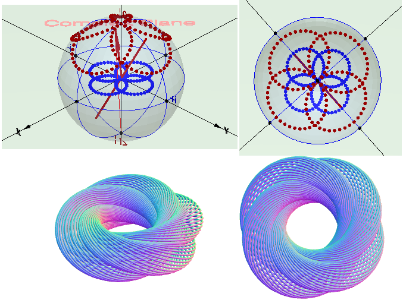

Визуализация расслоения Хопфа (Hopf fibration) и квантовая механика
Знаменитый физик сэр Роджер Пенроуз назвал расслоение Хопфа
“элементом архитектуры нашего мира”. Это достаточная причина для того, чтобы попытаться визуализировать
эту замечательную конструкцию.
Эта математическая
конструкция открыта Хайнцем Хопфом в 1931 году. Сейчас она а общеизвестна под
названиями Hopf fibration, Hopf fiber bundle или – в переводе на русский
– «расслоение Хопфа». Поначалу обнаруженное и описанное как совершенно
абстрактный объект в области чистой математики, расслоение Хопфа, как выяснилось
много десятилетий спустя, имеет широчайший диапазон приложений в математике
прикладной. И особенно – в самых разнообразных разделах
современной физики.
Фактически, Хайнц Хопф нашел способ заполнения всего пространства с помощью
окружностей. Вообще говоря, для этой задачи есть и совсем простые решения, типа такого –
взять прямую и нанизывать на нее до бесконечности концентрические окружности.
Однако Хопф занимался более общей задачей – построением отображения трехмерной
сферической поверхности или 3-сферы, находящейся в 4-мерном пространстве, на более
привычное нам 3-мерное евклидово пространство.
Суть этого замечательного объекта такова, что внутреннее строение трехмерного пространства,
как обнаружил Хопф, имеет с точки зрения топологии не то что простую, а скорее даже напротив,
весьма нетривиальную и богатую структуру.
В 1925 году Хайнц Хопф защитив диссертацию по топологии, стал работать в
Гёттингенском университете. В 1927—1928 годах работал в Принстонском университете,
c 1928 года — в Берлинском университете. В 1931 году профессор Высшей технической школы Цюриха,
где занимал кафедру знаменитого Германа Вейля.
Вращение колесика мыши вперед/назад позволяет уменьшить/увеличить размер трехмрного объекта на экране.
Если нажать левую клавшу мыши то при ее движении трехмерный объект будет вращаться на экране.
Если нажать правую клавшу мыши то при ее движении трехмерный объект будет двигатья по экрану.
Сделал небольшое видео,
чтобы стало более понятно,
как использовать данную программу визуализации расслоения Хопфа.
Интерфейс программы.
Рабочая область программы разделена на четыре части.
В левой части рабочей области находится сфера Блоха-Римана. Красной стрелкой на этой сфере показан вектор Блоха.
Каждому вектору Блоха, на сфере соответствует вектор квантового состояния |ψ〉.
Задавая вектор Блоха (координаты θ и φ на сфере) мы получаем (после соответствующих вычислений)
вектор квантового состояния |ψ〉, значение которого отображается под сферой Блоха.
В правой части рабочей области находится панель управления.
Kоординаты θ и φ вектора Блоха на сфере Блоха можно задавать в панели управления при помощи параметров
polar_electron и azimuth_electron соответственно.
Наиболее часто используемые значения
этих параметров можно также задавть при помощи кнопок, которые также расположены в правой части
рабочей области программы.
В программе предусмотрена возможность вращения вектора Блоха вокруг наперед заданной оси вращения.
Положение оси вращения можно задать при помощи параметров polar_axis и azimuth_axis
в панели управления находящейся в правой части рабочей области программы.
При выборе любого из значений этих параметров ось вращения на сфере Блоха появляется автоматически.
Наиболее часто используемые значения параметров используемых при задании положения осм вращения
можно также задавть при помощи кнопок, которые также расположены в правой части
рабочей области программы.
Средняя часть рабочей области программы отведена под вывод изображений соответствующим расслоениям Хопфа.
Вид расслоения Хопфа задается положением вектора Блоха на сфере Римана-Блоха. В правой части рабочей области программы
находится кнопка "Erase Hopf circles" которая предназначена для стирания окружностей из которых состоит
расслоение Хопфа. Также в правой части рабочей области программы находятся три кнопки "1", "2"
и "3" ("Thic circles"), которые задают толщину окружностей
(каждое расслоение Хопфа является окружностью, называемой окружностью Хопфа).
Переключатель "Axes" включает/выключает отображение осей координат в средней части
рабочей области программы (в которой происходит визуализация окружностей Хопфа).
В самой нижней части рабочей области программы находится ряд кнопок предназначенных
для вращения вектора Блоха на сфере Римана-Блоха:
Сфера Римана-Блоха - основа для визуализации расслоения Хопфа
Для того, чтобы понять как появляется расслоение Хопфа, сначала необходимо разобраться со сферой Римана-Блоха и стереографической
проекцией точек лежащих на этой сфере на комплекную плоскость. Каждая точка на этой сфере при визуализации
расслоения Хопфа отображается в виде окружности, которая назывется "окружностью Хопфа". Каждая окружность
Хопфа также назывется "слоем".
На всякий случай заметим, что сфера Римана-Блоха является чисто математической конструкцией и ее не следует рассматривать
как геометрический объект в обычном визуальном смысле.
В левой части рабочей области программа отображает сферу Римана-Блоха. В общем случае расслоение Хопфа строится опираясь на
четырехмерную топологию в которой сфера Римана-Блоха обычно назывется сферой Римана. Но так как мы будем визуализировать
расслоение Хопфа применительно к квантовой механике спина электрона, то сферу Римана-Блоха здесь обычно называют просто сферой Блоха,
так как Бернхард Риман в основном математик,а Феликс Блох - физик. Однако, как в чистой математике,
так и в физике для описания расслоения Хопфа используются одинаковые методы.
Заметим еще, что при описании состояния поляризации света сферу Римана-Блоха обычно называют сферой Пуанкаре.
В квантовой механике сфера Блоха это геометрическое представление квантового состояния
в двухуровневой системе, которое носит название кубит.
Кубит является простейшей квантово-механической системой и обобщает классический бит.
Так как кубит представляет собой двухуровневую систему то он может иметь два возможных значения 0 и 1:
Основная особенность кубита по сравнению с классическим битом – это возможность иметь состояния суперпозиции значений 0 и 1.
То есть кубит может находиться в произвольной суперпозиции двух базовых состояний |0〉 и |1〉.
Математическое описание кубита представлено в терминах суммы двух базисных векторов,
взвешенных по (комплексным) амплитудам. Это соответствует двухмерному вектору с комплексными коэффициентами а и b,
который является элементом векторного пространства C2. Такая суперпозиция может быть истолкована
как интерференция двух возможностей. Квантовое остояние кубита описывается как
|ψ〉 = a⋅|0〉 + b⋅|1〉
Таким образом вектор состояния |ψ〉 определяется суммой двух векторов a⋅|0〉 и b⋅|1〉.
В этой формуле |0〉 и |1〉 являются базисными векторами, а коэффициенты a и b стоящие
перед базисными векторами являются в общем случае комплексными числами.
Эти два числа называются амплитудами вероятности.
Вектор состояния |ψ〉 определяется суммой двух векторов
|ψ〉 = a⋅|0〉 + b⋅|1〉
В этой формуле |0〉 и |1〉 являются базисными векторами. Коэффициенты a и b стоящие
перед базисными векторами являются в общем случае комплексными числами.
Эти два числа называются амплитудами вероятности.
Как известно любое комплексное число можно записать в показательной форме.
Числа a и b в показательной форме выглядят следующим образом:
a = ra⋅eiφa
b = rb⋅eiφb
Вектор состояния |ψ〉 в этом случае примет следующий вид:
|ψ〉 = ra⋅eiφa|0〉 + rb⋅eiφb|1〉
Введем следующее обозначение
φ = φb-φa
и, следовательно,
φb = φ + φa
Тогда предыдущее выражение для вектора состояния |ψ〉 можно переписать в таком виде
|ψ〉 = ra⋅eiφa|0〉 + rb⋅eiφb|1〉 =
ra⋅eiφa|0〉 + rb⋅eiφ⋅eiφa|1〉 =
eiφa(ra|0〉 + rb⋅eiφ|1〉)
Для вектора состояния имеет значение только отношение в котором находятся между собой
амплитуды вероятности. Поэтому можно безболезненно умножить обе состовляющие вектора |ψ〉 на
одно и то же число равное e-iφa. После этого умножения получим
следующее выражение для |ψ〉
|ψ〉 = ra⋅|0〉 + rb⋅eiφ⋅|1〉
Заметим, что уможение вектора состояния |ψ〉 можно производить на любое число - действительное, комплексное или
чисто мнимое - физический смысл от этого не изменится.
Угол φa имеет название "глобальная фаза". Так как глобальная фаза появляется
только в результате математических преобразований, то она не имеет физического смысла и поэтому ее можно
не учитывать (но только в квантовомеханических расчетах). А при визуализации расслоения Хопфа глобальная фаза
играет основополагающую роль.
В отличие от глобальной фазы угол φ имеет прямой физический смысл, который
определяет разность фаз между компонентами вектора состояния. Угол φ имеет собой название "локальная фаза".
Локальная фаза играет большую роль при интерференции электронов.
Амплитуды вероятности a и b обычно нормируются на 1.
Следовательно и сумма ra2 + rb2 также должна
быть равной 1:
ra2 + rb2 = 1
Исходя из этого удобно ввести следующую нормировку (т. к. всегда cos2+sin2=1)
ra = cos(θ/2)
rb = sin(θ/2)
Тогда выражение для вектора состояния |ψ〉 примет вид
|ψ〉 = cos(θ/2)|0〉 + sin(θ/2)⋅eiφ|1〉
Сфера S3 в C2
Сфера S3 единичного радиуса в четырехмерном пространстве R4
представляет собой множество точек, находящихся на единичном расстоянии от начала координат.
Если в этом пространстве мы рассмотрим вещественные координаты
x1, y1 и x2, y2, то эта сфера
будет задаваться уравнением
x12 + y12
+ x22 + y22 = 1
Мы можем считать, что в выражении |ψ〉 = a⋅|0〉 + b⋅|1〉 значения комплексных величин
a и b определены следующим образом:
a = x1 + i⋅y1, b = x2 + i⋅y2.
Тогда сфера S3 представится как множество комплексных пар (a, b).
При этом следует учесть, что |a|2 + |b|2 = 1.
Тем самым мы получим изображение нашей сферы S3 в двумерном
комплексном пространстве C2.
Вся трехмерная сфера S3 заполнена окружностями,
а каждой такой окружности сопоставлена точка на двумерной сфере S2
- сфере Римана-Блоха.
Никакие две окружности не пересекаются. Это разбиение трехмерной
сферы S3 на окружности называется расслоением Хопфа.
Снова обратимся к кубиту.
Предположим, что мы поворачиваем наш кубит |ψ〉 на некоторый угол γ (глобальную фазу).
Просто глядя на этот кубит сам по себе, эта фаза физически ненаблюдаема,
поскольку вероятности не меняются, т.е. |ψ〉 ∼ λ⋅|ψ〉 = eiγ⋅|ψ〉
(при этом очевидно, что модуль |λ| = |eiγ| = 1).
Однако для визуализации отображения Хопфа нас будет интересовать именно вся величина
eiγ⋅|ψ〉, в которой угол γ будет изменяться в пределах от 0° до 360°
тем самым задавая окружность (эта окружность часто называется окружностью Хопфа).
Несмотря на то, что глобальная фаза не имеет физического смысла (так пишут во всех учебниках
по квантовой механике), в математике, используя ее можно получить очень красивые результаты.
Но и не только в математике. В начале статьи уже была приведена
ссылка на применение расслоения Хопфа в семи раделах современной физики.
Почему расслоение Хопфа, опирающееся на глобальнаую фазу (не имеющую физического смысла
в квантовой механике), используется в физике, я не знаю.
Но к концу 1970-х годов некоторым известным ученым стало ясно,
что расслоение Хопфа играет фундаментально
важную роль в калибровочных подходах к квантовой теории поля. Кроме того,
фактически в качестве ядра всей модели, расслоение Хопфа выступило в теории твисторов
Роджера Пенроуза, а позднее и в ряде других подходов к теории квантовой гравитации.
Таким образом трехмерная сфера S3 вложена в четырехмерное
евклидово пространство R4 отождествленное с двумерным комплексным пространством
C2(a, b), где a и b - комплесные числа. Далее рассмотрим отображение р трехмерной сферы
S3 на двумерную сферу S2 - сферу Блоха.
р: S3 ⟶ S2.
Для этого отображения берем точку из трехмерной сферы S3 с координатами (a, b)
и отобразим с помощью отображения p
эту пару комплексных чисел в одно комплексное число λ = a/b:
р: (a, b) ⟶ λ = a / b
Будем считать точку λ = a/b точкой на комплексной прямой С1.
Но комплексная прямая С1 одновременно является двумерной плоскостью R2.
Так как в общем случае комплексное число b может обращаться в 0, то надо добавить к С1
бесконечно удаленную точку. То есть пополнить двумерную плоскость R2 одной бесконечно удаленной точкой.
В результате этих дейсвий получается двумерная сфера S2.
На этой сфере все точки λ = a/b конечны, но одна точка нажодится в бесконечности. Пусть эта бесконечно удаленная точка
находится на южном полюсе двумерной сферы S2. В результате всех этих манипуляций
получили отображение трехмерной сферы S3 на двумерную сферу S2.
Чтобы лучше понять эти, весьма нетривиальные преобразования, советую посмотреть
несколько коротких видеороликов
Павла Шестопалова. Он очень хорошо, так сказать на пальцах, поясняет смысл расслоения Хопфа.
Приведем рисунок показывающий стереографическую проекцию единичной сферы
с южного полюса S на плоскость z = 0. Стереографическая проекция отображает
северное полушарие на область лежащую внутри единичной окружности.
Южное полушарие отображается на область за пределами единичной окружности.
Экватор совпадает с единичной окружностью.
Пусть O(0, 0, 0) - центр сферы, N(0, 0, 1) - северный полюс, а S(0, 0, -1) южный полюс.
Пусть P’(x’, y’, 0) - пересечение прямой SP с экваториальной плоскостью z = 0,
а Q(0, 0, z) – проекция P(x, y, z) на ось z. Точка P’ называется стереографической проекцией точки P.
Из подобных треугольников SOP’ и SQP мы находим:
Теперь введем в плоскости z = 0 комплексную переменную ζ
В программе визуализации комплексная переменная ζ обозначена стандартным образом принятым для
комплексных чисел ζ = z = x + iy. В этом выражении x и y являются коэффициентами перед
действительной и мнимой частями переменной z, и уже не пространственными координатами (x, y, z).
В программе визуализации комплексная плоскость расположена на пространственной плоскости z = 0.
Комплексное число ζ = z = x + iy находится чисто геометрически как точка P' пересечения
проецирующей прямой PS с плоскостью z = 0.
Представление вектора состояния на сфере Блоха сделано таким образом, что можно отобразить
истинный размер углов θ, а не их половинный размер θ/2.
Но следует помнить, что на самом деле базисные векторы |0〉 и |1〉 являются ортогональными векторами
несмотря на то, что они показаны лежащими на одной прямой. Это ничто иное, как просто условность принятая
специально для изображения векторов состояния на сфере Блоха.
Отображаем на экране окружности Хопфа
Подчеркнем еще раз, что каждая точка на сфере
Римана-Блоха при визуализации расслоения Хопфа отображается в виде окружности.
Однако, еще раз напомним, что сфера Римана-Блоха является чисто математической конструкцией и поэтому нельзя
в какой-либо точке этой сферы прсто пририсовать окружность. Все выглядит несколько сложнее.
Для визуализации окружности Хопфа прежде всего требуется найти положение центра этой окружности и ее радиус.
Для этого проведем прямую, как показано на следующем рисунке, и найдем точку пересечения этой прямой с плоскостью OXY
которая обозначена в программе как "Complex plane". Нам также требуется задать
некоторый масштаб в котором мы будем отображать окружности. Нетрудно понять, что над северным полюсом будет находиться
только одна окружноть - вектор Блоха направленный ииз точки O в точку N (северный полюс) при любом
значении значении параметра azimuth_electron (географическая долгота) всегда будет направлен вертикально вверх.
Поэтому можно взять размер ON = OA за единичный радиус окружности Хопфа. Все остальные радиусы окружностей
будут измеряться относительно этого радиуса (главное чтобы сохранялась пропорциональность радиусов всех окружностей Хопфа).
Таким образом над северным полюсом сферы Римана-Блоха будет располагаться только одна окружность.
Если мы изменим географическую широту (параметр polar_electron), то на сфере Римана-Блоха
появятся новые окружности лежащие на соответствующей параллели этой сферы. На следующем рисунке каждой
точке на сфере Римана-Блоха соответствует одна окружность. При значении параметра polar_electron
равным 120° вся эта параллель будет заполнена окружностями Хопфа - "слоями".
Совокупность всех окружностей на этой параллели образует тор. Чтобы получить этот рисунок - после запуска
программы задайте polar_electron) = 120° при помощи интерфейса расположенного в правой части прграммы
и затем нажимайте несколько раз кнопку Rotate Z+ и перед вами появятся окружности Хопфа.
Если теперь вы зададите значение polar_electron) = 180° то все окружности Хопфа выродятся
в вертикальную прямую линию.
А вот как выглядят торы образованные окружностями Хопфа при значениях параметра
polar_electron) соответственно равным 30°, 60° и 90°:
Из скриншота видно, что с увеличением параметра polar_electron торы "распухают". А при
значении параметра polar_electron = 180° вместо тора мы увидим вертикальную прямую линию.
Сразу множество торов образованных при вращении вокруг оси Z:
Толщина трубы такого тора изменяется в зависимости от места расположенияшироты между горизонтальной
плоскостью и точкой из которой происходит проецирование (южный полюс сферы).
По мере смещения широты от точки проецирования, тор проходит через все промежуточные состояния
между двумя предельными. В одном пределе, становясь все тоньше, он вырождается
в окружность (polar_electron = 0°).
В противоположном случае тор утолщается до такого состояния, когда его "дырка»" вырождается в прямую
линию (на сфере Блоха в этом случае параметр polar_electron = 180°).
Иначе говоря, окружностями Хопфа заполняется все пространство вложенными друг в друга торами.
Но самое главное тут вот что. Каждой точке сферы Блоха, расположенной на линии широты,
на поверхности тора соответствует линия окружности, захватывающая "дырку бублика"
и по косой опоясывающая трубу. Подобно тому, как множество точек заполняет всю окружность широты,
так и множество таких колец, зацепленных друг за друга, полностью покрывает поверхность
соответствующего тора.
Окружности Хопфа из которых состоит тор также еше называются окружностями Вилларсо
по имени французского математика и астронома Ивона Вилларсо, который заметил,
что на торе помимо двух стандартных семейств окружностей существует еще два других смейства
окружностей. Это пара окружностей, получаемых при сечении тора вращения диагональной
касательной плоскостью, проходящей через центр тора:
Все окружности Вилларсо на торе оказываются сцеплены друг с другом, и
в топологическом контексте теории узлов данная конфигурация именуется "зацепление Хопфа"
и представляет собой простейший нетривиальный (то есть неразвязываемый) узел.
Вот как выглядят крупным планом две зацепленные окружности Хопфа:
Однако нас интересует не только вращение вокруг оси Z.
Вот как выглядят отдельные окружности Хопфа (из набора таких окружностей
состоят торы) при значении параметра azimuth_electron) = 0° и различных значениях
параметра polar_electron. На этом скриншоте показано вращение уже не вокруг оси Z,
а вокруг оси Y:
При вращении вокруг оси Y получился несимметричный тор:
При вращение вокруг оси X также получается несимметричный тор:
Вращение можно производить вокруг произвольно направленной в пространстве оси N. Так
выглядят два тора полученных путем вращения вокруг двух различных осей. На скриншоте
мы видим не только зацепленные окружности Хопфа но уже и два зацепленных несимметричных тора:
А так выглядят четыре тора - вращение
осуществлено вокруг четырех различных осей:

В данной визулизации в расслоении Хопфа определяющую роль играет сфера Римана-Блоха и вращения вектора
Блоха на этой сфере. Как уже говорилось выше каждой точке на сфере соответствует окружность Хопфа.
С каждым поворотом вектора Блоха мы задаем новую точку на сфере. Повороты на сфере Римана-Блоха - это
есть ничто иное, как квантовые вращения. Сфера Римана_Блоха, вектор Блоха, квантовые вращения
а также эксперимент Штерна-Герлаха (а также их визуализации) подробно мной рассмотрены на сайтах
Сфера Блоха и эксперимент Штерна-Герлаха и
Визуализация квантового спина.
Особенно хочется отметить тесную связь сферы Блоха с экспериментом Штерна-Герлаха.
Из визуализаций, приведенных в этих двух сайтах, нетрудно увидеть, что если эксперимент
Штерна-Герлаха представить в соответствующем виде - как сферу по которой могут
двигаться
два полюса магнита - то мы фактически получим
сферу Блоха. На визуализации с этого сайта, эксперимент Штерна-Герлаха и сфера Блоха
объединены в одной и той же области экрана и фактически почти совпадают по физическому смыслу.
Мне не очень понятно, почему на это никто не обратил внимание при рассмотрении использования сферы Блоха
для пояснения смысла спина электрона.
Таким образом, на мой взгляд, можно выстроить следующую последовательность:
Эксперимент Штерна-Герлаха ⇒ сфера Римана-Блоха ⇒ квантовые вращения ⇒ расслоение Хопфа
Короткий видеоролик про связь эксперимента
Штерна-Герлаха со сферой Блоха и квантовыми вращениями.
Чтобы лучше понять суть расслоения Хопфа желательно ознакомиться с двумя видеороликами:
начало и
продолжение .
Обычно для визуализации расслоения Хопфа используются кватернионы. Однако для простоты понимания
я обошелся без них. В моей программе визуализации используется только тригонометрия и немного линейной алгебры.
Лекция Найлса Джонсона в которой он подробно рассказывает про
расслоение Хопфа.
Для визуализации расслоения Хопфа он использует
кватернионы .
Вот видоролик сделанный Найлсом Джонсоном с их использованием.
Вот еще одна, пожалуй лучшая,
из того, что я смог найти на просторах интернета, интерактивная программа визуализирующая расслоение Хопфа.
Но эта программа также использует кватернионы. На мой субъективный взгляд применение кватернионов для
визуализации расслоения Хопфа в определенной степени затрудняет понимание этой темы.
Вот ссылка , на статью,
в которой приведены следующие слова:
"Любопытная топологическая структура, известная как hopfion ring,
была создана в магнитном материале. Это первое, в своем роде, трехмерное
кольцо - заманчивая перспектива для нескольких направлений развития вычислительной техники".
А вот еще одна ссылка ,
на более подробную статью в которой рассматривается экспериментальное наблюдение хопфионов.
Так что расслоение Хопфа не только просто красиво выглядит на экране компьютера,
но и, по всей видимости, найдет применение в современных технологиях.